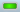

Using the Leap Motion Control Panel¶
This article describes the Leap Motion Control Panel, which you use to set the available options for your Leap Motion Controller.
Overview¶
When the the Leap Motion control panel application is running, it displays an icon in the notification area of the Windows Taskbar or Mac Finder bar. When the Leap Motion controller is plugged in and working properly, the icon turns green. Other colors indicate errors and abnormal operating conditions:
- — the Leap Motion controller is unplugged (or the Leap Motion software hasn’t detected it yet).
-  — the Leap Motion controller and software are operating normally.
- — indicates that a smudge or other contamination might be clouding the Leap Motion Controller sensor window.
- — indicates that tracking has been suspended because the Leap Motion frame rate is below the acceptable threshold. USB bandwidth contention is the primary correctable cause of poor performance and can often be resolved by plugging the Leap Motion controller into a different USB port, plugging the controller directly into the computer rather than using USB hubs or extender cables, or removing other USB devices.
- — indicates that the Leap Motion frame rate is below the acceptable threshold and you have turned off the Avoid Poor Performance option in the Leap Motion Control Panel. Tracking continues with greatly reduced reliability.
- — indicates that an update is available for the Leap Motion software. Open the Leap Motion Control Panel to install the update.
The Leap Motion control panel application icon menu provides the following commands:
- Settings... — Opens the Leap Motion Control Panel.
- Visualizer... — launches the (consumer-oriented) Visualizer application.
- Pause/Resume Tracking — Stops/Resumes the production of Leap Motion tracking data.
Leap Motion Settings¶
You can adjust the behavior of the Leap Motion system and perform diagnostic checks using the Leap Motion Control Panel. Open the control panel using the Settings... command of the icon menu.
General settings¶
The General page of the Leap Motion Control Panel provides the following settings:
Check the Allow Web Apps checkbox to turn on the WebSocket server that provides tracking data to web applications. (It is possible for other applications to connect to the WebSocket server, so turning this setting off could affect a few desktop applications as well.)
Check Allow Background Apps to permit applications to receive tracking data when they are not the foreground, focused application.
Check Allow Images to permit applications to receive infrared camera images from the Leap Motion hardware. If unchecked, applications continue to receive tracking data (hand, finger, tool positions, etc), but not the camera images.
Check Automatic Power Saving to allow the Leap Motion software to reduce power usage by adjusting the tracking frame rate based on the amount of movement in the field of view. Power saving is always used when a computer is running on battery power.
Check Send Usage Data to send anonymous usage statistics to Leap Motion.
Check Launch on Startup to launch the control panel application when your computer starts up.
Check Automatic Interaction Height to allow the Leap Motion software to adjust the height of the interaction box automatically. This setting affects the InteractionBox class provided by the Leap Motion API. Adjust the Interaction Height slider to manually set the interaction box height.
Check Automatically Install Updates to allow the Leap Motion software to automatically download and install software updates. An update is installed when you restart your computer. Click Install Update to install an available update immediately.
Tracking settings¶
Check Robust Mode to enable the software to enter the “Robust Tracking mode,” which allows tracking to perform better in bright IR lighting conditions.
Check Auto-orient Tracking to allow the device to flip the z axis when it detects a hand entering the field of view from the opposite side. Click the Reverse Orientation button to flip the axis manually.
Robust tracking mode¶
The Robust Mode improves the reliability of the tracking data in bright lighting conditions. Robust mode allows the Leap Motion Controller to operate in a wider range of environmental conditions; however, other performance characteristics may be reduced. The main effects on performance are that there will be increased processing latency and very fast motions by the user will cause a loss of tracking data.
The Leap Motion Controller automatically drops into robust mode when lighting conditions become poorand will remain in robust mode for at least 30 seconds.
Troubleshooting¶
Click Show Software Log to view events related to the Leap Motion system. If you are having problems, we may ask you to save the log and send it to Leap Motion to help us assess the problem. You can save the log by copying the contents of the log window to an email or text document.
Click Diagnostic Visualizer to open the Visualizer application.
Click Report Software Issue to open the bug report form. See Reporting bugs for information.
Click Restore Default Settings to revert all of the Leap Motion settings to their original values.
Check the Low Resource Mode checkbox to reduce the CPU and USB bandwidth used by the Leap Motion Controller and software. This setting may reduce maximum tracking range, speed, and accuracy, but may be necessary on computers with congested USB busses (from multiple USB and Bluetooth devices) or lower-rated CPU chips.
Uncheck Avoid Poor Performance to disable the low device frame rate check. The frame rate check pauses tracking when low device frame rates are detected so that you can take corrective action. When you disable this option, tracking is not paused. USB bandwidth problems are the most common cause of low device frame rate, but overall CPU load can contribute as well, especially on computers near or below our minimum recommended system requirements.
Click Recalibrate Device to start the device calibration utility. See Recalibration for information.
Recalibration¶
<iframe width=”560” height=”315” src=”https://www.youtube.com/embed/AXHH-QXqzlI” frameborder=”0” allowfullscreen></iframe>
If the sensors on the Leap Motion controller are knocked out of their initial alignment, the device must be recalibrated. Symptoms that may indicate the need to recalibrate include:
- Persistent jumpiness
- Frequent discontinuities in the tracking data
- Aberrations in tracking data that occur only in certain areas of the field of view
- Poor tracking range
You can look for these symptoms using the the Leap Motion Visualizer.
We also recommend recalibration, using a mirror, if you mount your Leap Motion controller under a piece of glass or other IR-transparent material.
To recalibrate your Leap Motion controller:
- Open the Leap Motion Settins application using the icon menu on the Windows Taskbar or Mac Finder bar.
- Select the Troubleshooting page.
- Click the Recalibrate Device button.
- Follow the on-screen instructions to perform the calibration procedure.
You will need a flat, reflective surface. A mirror is ideal, but many other reflective surfaces like a flat screen monitor will work accetably as well. During the procedure, hold the Leap Motion Controller so that the LEDs shine on the reflective surface and are reflected back into the top of the device. The calibration window displays a disk that moves as you change the angle between the surface and the device. Move side-to-side and up-and-down while rotating the controller to move this disc so that it “paints” the window. A score of 80 is acceptable, but a score of 90 or more is ideal.
Reporting bugs¶
If you are having problems with the Leap Motion software or hardware, please contact us so we can help you resolve the issue. You can submit reports on the Leap Motion Developer Portal or by using the Bug Report form of the Leap Motion application.
We may ask you to reproduce the issue on your device and record some diagnostic information which you can send to Leap Motion to help us assess the problem. You can start and stop the recording of diagnostic information from the Leap Motion Bug Report form. The data is compressed and encrypted and is not useful for your local application debugging. The data recorded can grow large over time, so we do not recommend recording diagnostics for an extended period.
To report a bug,
- Open the Leap Motion Settings dialog using the icon menu on the Windows Taskbar or Mac Finder bar.
- Select the Troubleshooting page.
- Click the Report Software Issue button.
- On the Bug Report form, select the reason that best fits your bug from the Reason drop-down list.
- Add any important details, such as how to reproduce your bug in the Details section.
- For some types of bugs, you will be asked to record diagnostic information.
- When finished, click the Send Issue Report button. Your bug information and recorded diagnostics will be sent to Leap Motion.
If you are asked to record diagnostic information,
- Press the Record button.
- Reproduce the problem (it may help to have the Leap Motion Visualizer running).
- Press the Stop button after a short period of time.
- Click Send to upload the diagnostic file to Leap Motion for analysis.